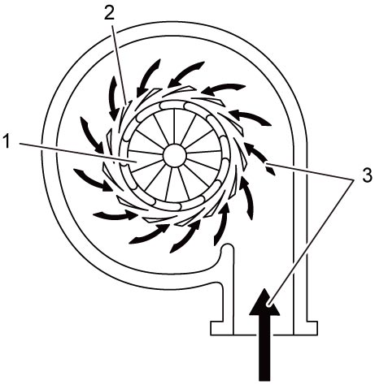

1D
| Turbocharger Description |
VGT (Variable Geometry Turbocharger) (3) controls supercharged intake air to optimum volume adjusting openings of the variable nozzle vanes in the turbine chamber. ECM (1) controls turbocharger actuator (2) in response to the engine speed and load, and operates the variable nozzle vanes (4). Adjusting function of the variable nozzle vanes for the exhaust gas entering the turbine (5) enables disuse of the waste gate valve and realizes clean emission with optimized EGR rate and high output of the engine.
 "Expand image")
Engine Speed at Low
When the engine speed and exhaust gas pressure are at low, the variable nozzle vanes (2) are closed and velocity of the exhaust gas (3) entering the turbine is increased which brings higher revolution of the turbine (1) and supercharged pressure.

 "Expand image")
Engine Speed at High
When the engine speed and exhaust gas pressure are at high, the variable nozzle vanes (2) are opened and velocity of the exhaust gas (3) entering the turbine (1) is decreased which protects the turbine against overspeed.
 "Expand image")